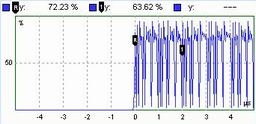

Markers
Markers are tools for numerical readout of measured data in diagrams. A marker is displayed with a symbol on the trace. At the same time, the coordinates are displayed above the diagram.

In many views, the R&S CMW provides a reference marker (R) and additional markers labeled (1) and (2):
- The reference marker (R) indicates the coordinates of a trace point and defines the reference values for all relative markers.
- The markers (1) and (2) can be configured as absolute or relative markers. Absolute markers indicate the coordinates of a trace point. Relative markers indicate the coordinates relative to the position of the reference marker.
The "Trace Mode" defines whether all markers are always set to the same trace in the view ("Collective" mode) or positioned individually ("Individual" mode).
The marker settings are accessed via the "Marker" softkey. No remote control for markers is provided.